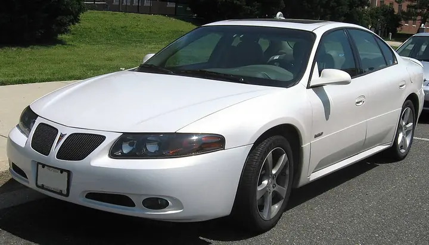
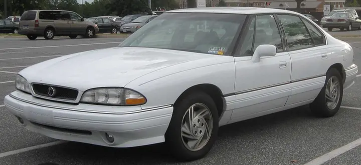
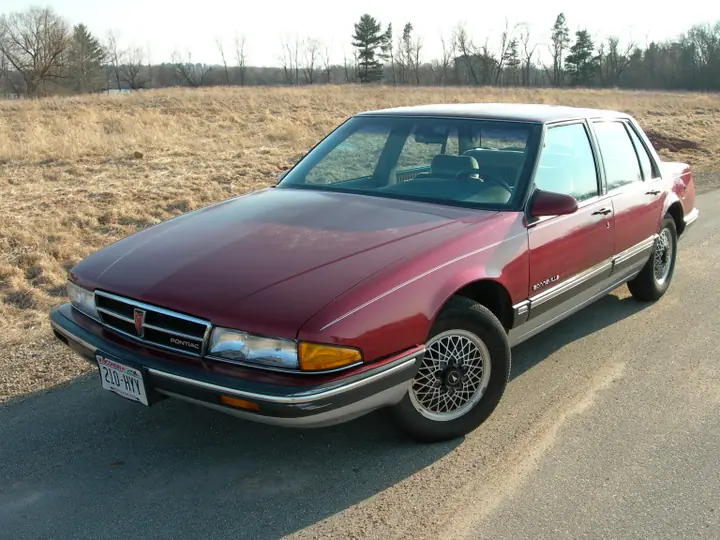
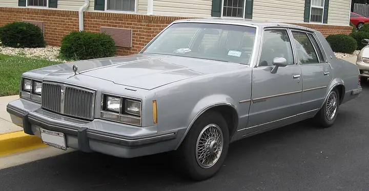

Pontiac Bonneville
Tenth generation (2000–2005) · 1999–2005
Abstract
This generation of the Pontiac Bonneville was built March 1999 – May 27, 2005 in Lake Orion, Michigan, U.S. 2000–2005, Hamtramck, Michigan, U.S. 2004–2005. Body styles: 4-door sedan. Layout: Transverse front-engine, front-wheel drive. Designed by Wayne Cherry (1996).


1Specifications
| Production | March 1999 – May 27, 2005 |
|---|---|
| Model years | 2000–2005 |
| Assembly | Lake Orion, Michigan, U.S. 2000–2005Hamtramck, Michigan, U.S. 2004–2005 |
| Designer | Wayne Cherry (1996) |
| Body style | 4-door sedan |
| Layout | Transverse front-engine, front-wheel drive |
| Platform | G platform/GMX310 |
| Engine | 3.8 L Series II L36 V63.8 L Series II L67 V64.6 L Northstar LD8 V8 |
| Transmission | 4-speed 4T65-E automatic4-speed 4T65E-HD automatic4-speed 4T80-E automatic |
| Wheelbase | 112.2 in |
| Length | 2000–01 SE: 202.5 in2000–01 SLE & SSEi: 203.2 in2002–05: 202.6 in |
| Width | 74.2 in |
| Height | 2000–01 SE: 56.0 in2000–01 SLE & SSEi: 56.4 in2002–05: 56.6 in |
| Weight | 3596 lb (SE)3656 lb (SLE)3745 lb (SSEi) |
| Related | Oldsmobile AuroraBuick LeSabreCadillac Seville |
2Versions
- Return of the V8
3Previous generations







.jpg){kind=link}

.jpg){kind=link}

.jpg){kind=link}


.jpg){kind=link}


4Generation by generation
Length −4% from the first to the last
1958 19585,377 mm
1959–1960 19595,606 mm
1961–1964 19615,560 mm
1965–1970 19655,654 mm
1971–1976 19715,745 mm
1977–1981 19775,443 mm
1982–1986 19825,044 mm
1987–1991 19875,047 mm
1992–1999 19925,067 mm
2000–2005 19995,144 mm
Weight −8% from the first to the last
1958 19581,780 kg
1959–1960 19591,853 kg
1987–1991 19871,508 kg
1992–1999 19921,563 kg
2000–2005 19991,631 kg